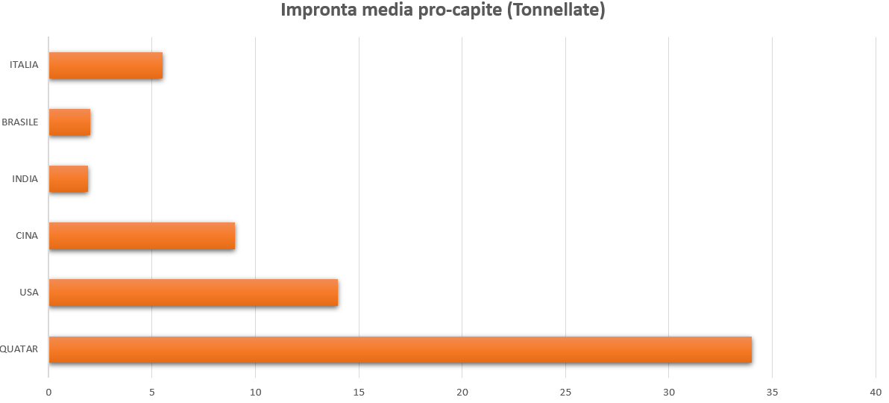
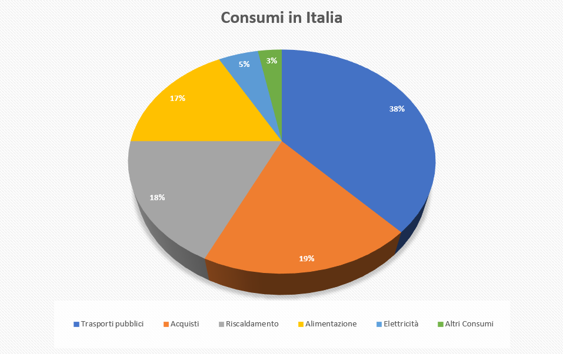
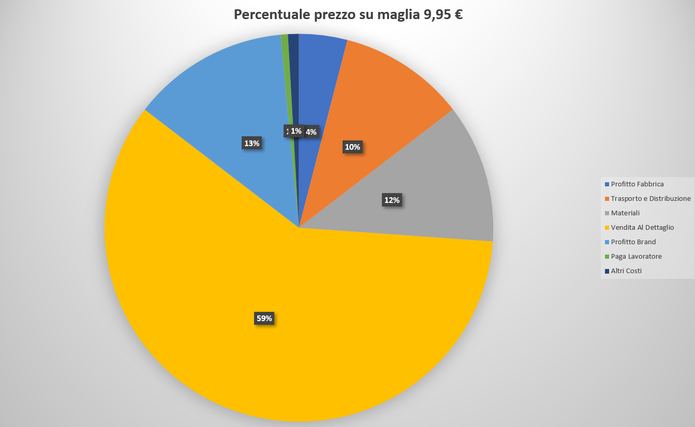
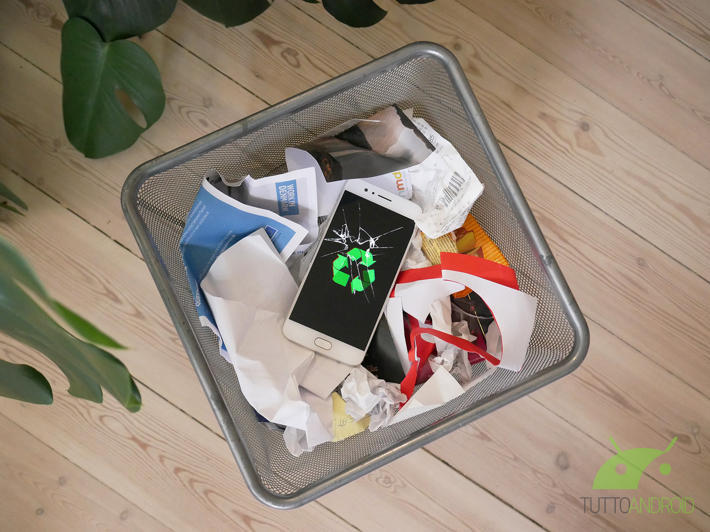
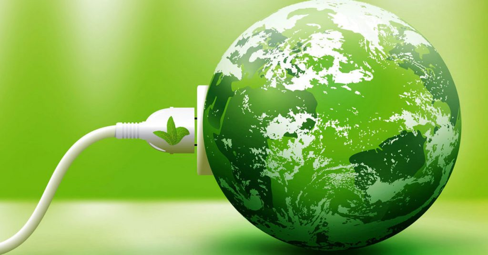

| Isabella Brianza |
|---|
| Sergio Sereno |
|---|
Il primo incontro del progetto tutto è connesso dedicato alla parola “Comprendere” è stato tenuto da Isabella Brianza e Sergio Sereno, marito e moglie che hanno fatto ragionare il pubblico presente sui problemi ambientali relativi alla biosfera, e i molti modi con i quali chiunque può fare qualcosa per migliorare la situazione.
Anzitutto bisogna definire di cosa si parla quando si parla di biosfera, ovvero l’insieme di tutto ciò che è vita. Oltretutto bisogna considerare come noi esseri umani siamo insignificanti rispetto alle piante in quanto a biomassa totale: la massa totale degli esseri umani sta a quella delle piante in un rapporto 0,06 a 450. Ecco perché è così drammatico il fatto che noi stiamo riuscendo a rovinare l’ambiente, nonostante siamo estremamente più insignificanti.
Sono stati evidenziati in particolar modo i nove sottoinsiemi della biosfera che si trovano in stato critico:
1) Il Cambiamento Climatico
2) L’integrità Della Biosfera (la biodiversità)
3) Il Cambio Nell’Utilizzo Del Suolo (cementificazione)
4) L’uso dell’Acqua potabile
5) L’uso Dei Fertilizzanti
6) L’acidificazione Degli Oceani
7) Il Buco Nell’Ozono
8) I Fenomeni Non Quantificati (Ad esempio le microplastiche)
Questi fattori sono tutti connessi tra di loro (da qui “tutto è connesso”) infatti aumentando i livelli di un sottoinsieme potrebbero aumentare anche i livelli di altri sottoinsiemi e così via. Ognuno di essi ha un livello di guardia, un livello che non bisogna superare per rimanere nella norma. Se vengono raggiunti i tipping points, vale a dire i livelli massimi di sicurezza, il sottoinsieme è a rischio e diventa un pericolo che la scienza non può più prevedere.
Secondo i dati di settembre 2022, la quantità di molecole di CO2 nell’atmosfera è di circa 419 ppm (particelle per milione). Nei precedenti 800.000 anni il livello non era mai salito sopra le 300 ppm.
Al seguito della rivoluzione industriale c’è stata una crescita esponenziale di questo valore, dovuta principalmente a motivi antropici e combustibili. Vi sono numerose evidenze tangibili di questo aumento:
• Gli anni diventano sempre più caldi
• Il livello di copertura glaciale ai poli si riduce
• Il ghiacciaio in Val di Susa nel giro di 30 anni si è drasticamente ridotto
• Vi sono danni economici derivati dagli eventi ambientali estremi
Per agire contro questi preoccupanti dati, e rimanere entro i 1,5 C° di riscaldamento globale, è necessario raggiungere il picco di emissioni entro il 2025, oppure raggiungere le emissioni zero entro il 2050.
Con i consumi attuali, entro il 2035 potremmo superare di 3 C° il livello di cambiamento climatico.
Più del 70% delle emissioni sono causate dall’Energia e dalle sue emissioni. In particolar modo vi è un effetto particolarmente negativo chiamato effetto rebound, ovvero il pensare di poter consumare quanta energia si voglia “perché tanto è green”. Questo ragionamento è molto dannoso e porta alla lunga a consumare quasi allo stesso modo dei combustibili fossili. In particolar modo l’impronta media pro-capite in alcuni paesi del mondo è uguale a:
La media mondiale si trova sopra le 5 tonnellate. Per essere nei limiti non dovrebbe esseere sopra alle 2 tonnellate. In particolar modo in Italia i consumi si dividono in:
È stato poi effettuato un gioco in cui tutti i partecipanti all’incontro dovevano collaborare pe trovare il costo di una maglietta diviso nelle varie fasi della sua lavorazione. Il risultato è stato il seguente:
Possiamo notare come nel prezzo finale non siano inclusi il costo sociale e il costo ambientale di ogni maglietta. Infatti, ogni anno vengono effettuate nell’industria dell’abbigliamento oltre 92 milioni di tonnellate di scarti, producendo un aumento del 10% nella produzione della CO2 mondiale.
Anche l’industria alimentare è un’industria molto inquinante, infatti:
• 1/3 Della produzione di cibo mondiale non viene mangiato, dato che la produzione è maggiore del consumo
• In Italia ogni anno vi sono 146 Kg di cibo sprecato a persona
• Ogni anno nel mondo vengono buttate 1,3 Tonnellate di cibo
• Circa il 26% delle emissioni mondiali vengono da questa industria (di queste il 52% sono dovute all’allevamento e il 30% all’agricoltura)
Anche gli smartphone che utilizziamo ogni giorno potrebbero essere meno inquinanti di quello che effettivamente sono. Infatti, essi contengono dei materiali rari che sono molto rari da estrarre, ma, nonostante ciò, dopo la fine del loro ciclo vitale solo il 15% di essi viene riciclato quando potenzialmente si potrebbe riciclare il 96% di essi. Per un singolo smartphone è necessario scavare oltre 30 Kg di roccia. Invece per 1g di oro puro si potrebbero utilizzare 36 telefoni usati, anziché lavorare circa 100 Kg di roccia
In questo primo incontro il tema trattato fondamentalmente è uno: quello del cambiamento climatico e del fatto che ognuno di noi può fare qualcosa per combatterlo. I cambiamenti che stanno avvenendo nel nostro pianeta oggi sono vari e complessi e non si può generalizzare una soluzione che risolva tutto. I problemi vanno divisi in compiti più semplici come possono essere il riciclare i nostri smartphone, o comprare prodotti riciclati, o ancora non sprecare cibo: l’importante è che ognuno faccia la sua parte. Ho particolarmente apprezzato i Kahoot e i vari giochi organizzati, che hanno reso l’esperienza molto coinvolgente e interessante, riuscendo a tenere alto l’interesse per i temi trattati
